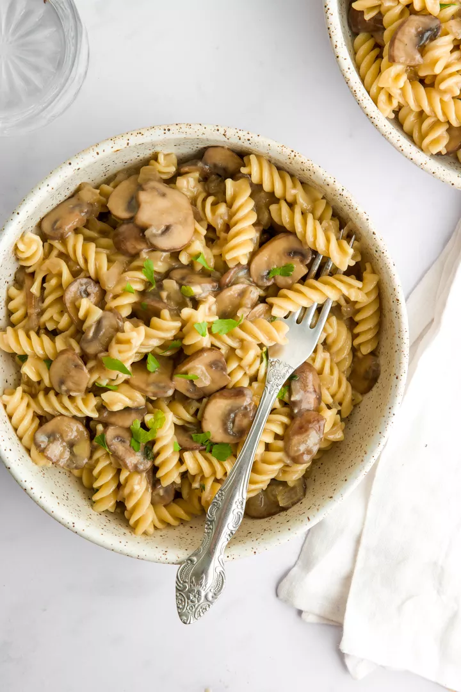

Ingredients
- 1 pound dried short pasta, like rotini or farfalle
- 3 tablespoons olive oil
- 1 small white onion, diced
- 3 cloves garlic, minced
- 1 pound baby bella mushrooms, stems trimmed and sliced
- 2 teaspoons fresh thyme leaves (about 2 sprigs), plus more for garnish
- 1 teaspoon chopped fresh sage, plus more for garnish
- 3 tablespoons all-purpose flour
- 1/3 cup dry white wine, like Sauvignon Blanc
- 1 cup low-sodium vegetable stock
- 2 tablespoons vegan Worcestershire sauce
- 1/2 cup full-fat coconut milk
- 1/2 teaspoon salt, plus more for salting pasta water
- 1/4 teaspoon freshly ground black pepper, plus more to taste
Description
Stroganoff is a classic Russian dish that features a creamy sauce with beef and mushrooms served over wide egg noodles. Vegan Mushroom Stroganoff omits the beef, ups the mushrooms, and uses coconut milk for a version that is just as creamy and satisfying.
Recipe credits:
Steps
- Cook the pasta:Fill a large pot with water and a generous amount of salt. Bring it to a boil over high heat. Add the pasta and cook according to package instructions. Drain the pasta into a colander set in the sink. Set it aside.
- Cook the vegetables:Set a large skillet over medium heat. Add the olive oil and onions, and sauté for 5 to 7 minutes until the onions are translucent. Add the garlic and mushrooms, and sauté for 5 to 8 minutes, until the mushrooms are browned and tender. Stir in the thyme and sage, and cook for an additional minute until fragrant.
- Add the flour, wine, broth, and Worcestershire sauce:Sprinkle the flour over the mushrooms and cook for 1 minute, stirring constantly with a rubber spatula to incorporate. Then pour in the white wine, vegetable stock, and Worcestershire sauce, and stir to combine. Bring the mixture to a simmer for 5 minutes.
- Stir in the coconut milk:Pour the coconut milk into the sauce and stir until just combined. Season with salt and black pepper. Taste and adjust seasoning with more salt and black pepper if needed.
- Serve:Stir the pasta into the sauce, divide among serving plates, and garnish with more thyme and sage if you’d like.